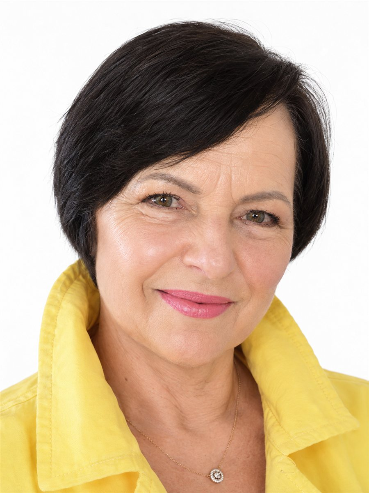

Trumpas vandens testas
Ar žinai, kas tikrai teka iš tavo čiaupo?
60 sekundžių ir keli paprasti klausimai — tiek reikia, kad sužinotum, ar verta atkreipti dėmesį į savo namų vandenį.

Esu Viktorija
Daugiau nei 20 metų dirbu tiesioginių pardavimų srityje su Amway kompanija, kur esu pasiekusi Platina lygį. Šiandien nemažai savo laiko skiriu vandens kokybės temai — padedu žmonėms suprasti, kas iš tikrųjų teka iš jų čiaupo, ir kaip apie tai pasirūpinti.
Klausimas 1 iš 6
Tavo rezultatas
—
—
Aš pati jau daugiau nei 20 metų dirbu su Amway produktais, ir viena iš sričių, kuriai šiandien skiriu daugiausia dėmesio — vandens kokybė ir eSpring vandens valymo sistema. Jei nori pasikalbėti, kas tiksliai teka iš tavo čiaupo, ir ar tai tau aktualu — parašyk man žinutę, mielai pasidalinsiu, ką pati žinau.
Rašyti Instagram